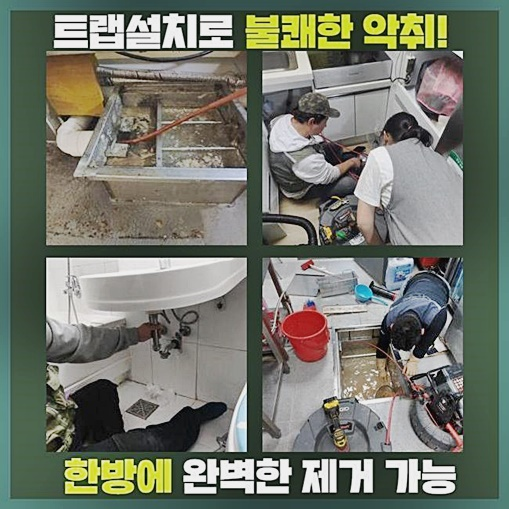
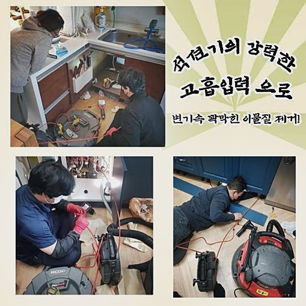
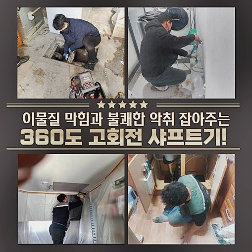
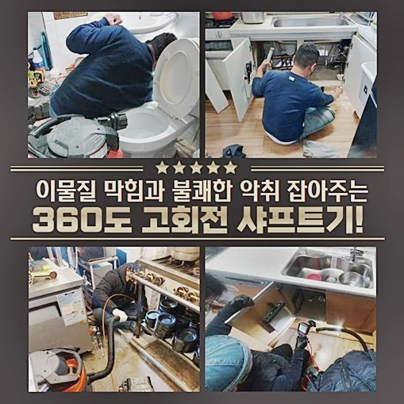
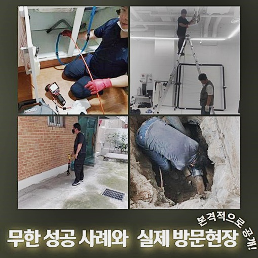
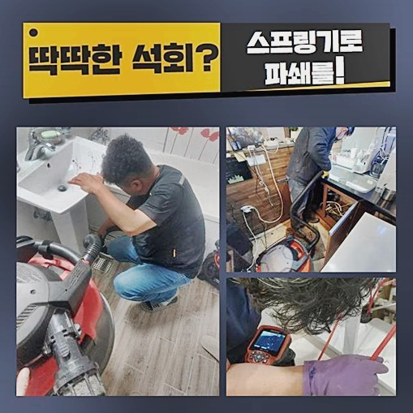
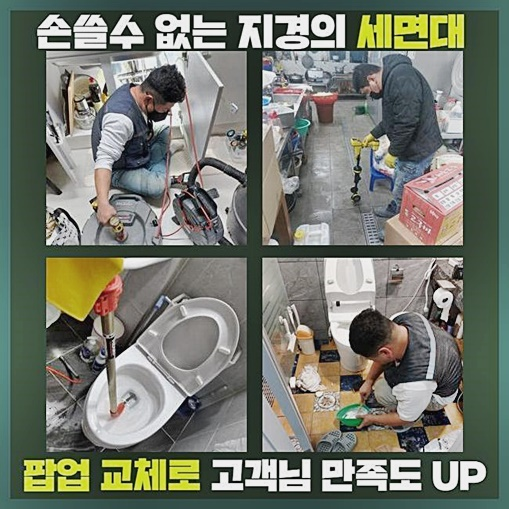

🏠 송파구 장지동싱크대배수관막힘 잠실6동 오수맨홀청소 누수탐지
용인 장지동 싱크대막힘 전문 시공 후기

📋 작업 개요
- 위치: 용인 장지동, 장지동, 용인
- 서비스 유형: 싱크대막힘, 하수구막힘, 배관막힘, 맨홀막힘, 누수수리, 뚫는업체, 배관청소, 고압세척
- 작업 일시: 2024. 6. 11. 17:24
- 업체명: 하수구수사대 (010-5615-2118)
🔍 문제 상황
송파구 장지동싱크대배수관막힘 잠실6동 오수맨홀청소 누수탐지
욕실의 샤워시설처럼 물을 상당하게 이용하는 곳에서는 물 흐름에 대한 오류도 자주 일어날 수 밖에 없는데 원인을 알아보자면 무심하게 버린 남은 음식물과 재료 등으로 인해 형성되는 사건이 비일비재 합니다
가장 보편적이면서도 명백한 이유로 나타나는 문제점이지만 해결 과정의 복잡성은 매우 높다고 볼 수 있겠죠
관통기나 가루약 등을 도입해도 문제가 여전한 경우라면 속히 전문인의 맞춤 클리닝을 의뢰하시는 게 좋습니다
셀프 뚫기로 허탕만 치시면 단순한 막힘에만 제한되는 게 아니라 다른 층에도 크고 작은 곤란함을 주게되는 힘든 문제로 나아갑니다!
이번에 방문한 문제 작업지 역시 고비를 맞이한 상태로 신속한 대응이 필요했습니다
점검을 거치고 보니 딱봐도 낡아보이는 곳에다 전화주신 고객분이 스스로 해소하려 시도했지만 딱히 개선은 없었는데요
비교적 인과관계가 확실한 하수관의 봉쇄 사건이라면 가능할 수 있어도 막혀버린 배수로를 직접 청소한다는 것은 결코 단순하지 않습니다
발달된 전문 도구를 접목해서 문제점을 두루 짚고 집중 청소를 시행하는게 이후로 절대로 똑같은 막힘 증세가 형성되지 않게 막는 합리적 대응 수단입니다
하수시설의 막힘 사고는 바람직하지 않은 루틴으로 촉발되는데 단순해서 건너뛰기 좋은 사건들이 축적되어서 복잡하게 꼬이는 겁니다
물에는 녹지 않는 비수용성의 기름을 쪼로록 따라서 개수대 구멍으로 폐기하거나 과일껍질이나 찻잎처럼 폐기되기 까다로운 물질을 딱히 고려하지 않고 하수구로 빠트리는 일도 생각보다 많아요

🔎 원인 분석
💡 전문가 진단: 정밀 진단 장비를 사용하여 슬러지의 고착 여부를 판명하고 타격/세척 작업을 실시했습니다.
싱크대의 물이 내려가는 시설물 주변부를 체크해 봤더니 바닥에 물이 흥건했고 코를 막게 되는 악취와 같은 상황으로 보였습니다
근처만 둘러봤는데도 아마 수도 시스템에 대한 부족함이 유발한 트러블이 거의 확실하다는 타당한 의문을 품게 되었습니다
포괄적인 배관의 조건들에 대해 두루 훑어보고 나서 흡입 기능의 석션기를 작용시킴으로 인하여 봉쇄된 이물질이 소거되나 관찰해 보려 했는데요
주방 배관을 덮고있는 하부 서랍 가구가 석션기가 들어가기에는 여유공간이 너무 비좁아서 하부장 분리가 필요했어요
알아서 진행해달라고 말씀하셔서 능숙하게 탈거해 주고 석션기 기술을 도입해서 클리닝을 수행하게 됐습니다
어려운 일은 아니었기에 작업을 이어가면서는 집주인분과 건물 내의 시설물에 대한 세부적 디테일에 대해서도 논의할 수 있었어요
짐을 옮기신지 많이 지나지 않았고 막힘 세태를 촉발할 부주의한 행동으로 오물을 내버린 일이 아무리 생각해도 모르겠다며 억울함을 호소하셨어요
전에 살던 임대인이 큰 고려없이 싱크대를 쓴게 분명하다는 점을 웬만큼 확신할 수 있었는데 권리가 양도됐으니 어쩔 수는 없습니다
어떠한 절차에 입각하여 시설물을 써야만 다시는 똑같은 막힘 증세가 찾아오지 않을 지에 대해 안내했습니다
방해요소를 없앤 맨 바닥은 적지 않은 양의 물의 역행이 있었고 악취까지 풍겼었고 작은 크기의 벌레가 번식했더라고요
계절도 계절이지만 습기가 짙었는데 만일 모르고 지나갔다면 곰팡이가 가구로 퍼지는 위험천만한 시기로 진입하는 절체절명의 타이밍이었네요

🔧 작업 과정
석션 업무는 완수했지만 완전한 개선을 꿈꿔볼만 한 수준으로 제거되진 않았어요
약간의 잔수랑 흡수하는 과정으로 수습이 되는 가장 적은 양이라고 언급할 만한 찌꺼기나 덩어리만 배출되었더라고요
과잉으로 침적해 버린 형태에는 못 미친다면 석션장비만 활용해도 웬만큼은 제거가 되는데 진공을 만드는 접근으로는 새발의 피도 안되는 처지라는 현실을 감지해 낼 수 있었죠
그리고는 배수관을 관찰해 주는 카메라 장치를 주입시켜서 어느 쪽 라인이 어쩌다 막혔는지 관찰해 보았어요
이와 같은 내시경 기계만 적극적으로 쓴다면 오류 사항을 명확히 분석할 수 있다보니 혜택이 많다고 설명할 수 있어요
지금 소개하고 있는 작업지는 막힌 수준이 기대를 훌쩍 넘어서 하수구 안쪽 상황이 감지되지도 않고 기름 범벅의 잔재나 부유물만 엄청난 양으로 쌓여있는 게 보이더라고요
따라서 더 구체적인 검토는 효과가 없을 듯하다고 결론을 내린 즉시 샤프트 기기 자체를 삽입하여 배관 벽을 본격 세척하기 시작했어요
해당 샤프트 장비는 청소기 방법을 통해 관로상의 찌꺼기를 척결하는 단계가 아니라 빠르게 돌아가는 헤드의 사슬을 활용하여 시행하는 물리적 제거법으로 청소가 진행되므로 성능이 대폭 상승합니다
약해진 하수구에서 혹시나 스크래치 등의 손상이 끼친다면 갈라짐과 같은 일어나지 않았을 문제까지 터져나오게 되니 섬세한 컨트롤을 발휘해야 할 것입니다
배수로의 부식 정도가 심한 수준의 가정집이라면 걸핏하면 이런 결함들이 피어오르는 부분이니 좀 더 꼼꼼하게 조심히 업무해야 할 것은 필수 조건입니다
이 단계를 거치면서 떨어져 나간 덩어리나 떠다니는 잔여물들이 배수로로 이동하여 새로운 막힘을 탄생시키는 경우에 이르지 않게끔 석션 청소도 필히 빠르게 처리해줘야 합니다
다시 수돗물을 틀어서 물의 배출 테스트를 처리해 본 결과 계속해서 괴롭히던 느릿한 유속으로 배출되는 모습이 싹 사라진걸 보니 안심이 되더라고요
싱크대에서 배출이 한방에 되는 점을 확인하시곤 고객님도 계속해서 막히고 또 막히던 영역을 제대로 해결해 줬다며 손뼉을 치셨네요
초기가 아니라 꽤 진행된 막힘 현황이면 좀 더 속히 하수구 전문 세척업체로 전화해 주셨어야 하는 부분이기는 했지만 그래도 더 진척되지 않을때 연락을 시도해 주신 점이 신의 한수였다고 싶더라고요
낱낱이 보여드린 모습에 흡족하셨는지 베란다의 하수관 개선도 요구를 해주셨습니다
미리 협의된 적이 없긴 했으나 아직 철수하기 전인 상황임을 판단했고 투입되어야 할 기술 수준도 평균 이상은 아닌듯해 얼른 작업을 개시했어요
깊은 배관 속을 체크하는 촬영장비를 동원해서 파이프 내측의 오염 컨디션을 체크하면서 적당하다 싶은 도구를 골랐죠


✅ 작업 완료
샤프트 기기 자체를 끈기 있게 돌려주니 바로 수로의 확보가 달성되더라고요
부패한 냄새가 베란다에 심각해서다행히 싱크대 작업과 같이 정체된 사항이 뚫려서 뿌듯함이 두 배였네요
이처럼 다른 형태라 해도 파이프라인 결함에 연관된 사안이라면 무조건 막힘을 철저히 다루는 프로가 견적을 내드리는 게 도움이 될 것입니다
혼자서는 도저히 해결이 안되는 문제라면 하수구를 성공적으로 다뤄온 저에게 내방을 요청주시면 기존의 기대 수준 이상으로 만족감을 느끼실 수 있으실거에요
의뢰받으면 바로 시동을 걸고 철두철미한 작업으로 매끄러운 배관 내외부를 만드는 곳이라는 사실을 당당하게 알려드리며 글을 마치도록 하겠습니다




⚠️ 베란다 누수 및 방수 관리 방법
- ✅ 비가 많이 올 때 창틀 주변이나 아래층 천장에 얼룩이 생기는지 정기적으로 확인해 보세요.
- ✅ 우수관 주변 실리콘 마감이 들뜨거나 깨진 틈새가 있는지 손상 여부를 수시로 체크하세요.
- ✅ 베란다 바닥 타일의 줄눈(메지)이 소실되면 그 틈으로 물이 침투하여 누수가 유발됩니다.
- ✅ 누수 의심 증상 발견 시 방치하면 아래층 손실이 커지므로 즉시 전문가의 진단을 받으십시오.
💡 핵심 정리
- 확실한 장비 작업(내시경 점검 및 샤프트 스케일링)으로 원인을 뿌리 뽑습니다.
- 작업 후 1년 이내에 동일한 부위 재발 시 100% 무상 A/S 서비스를 보장합니다.
- 서울 · 경기 · 인천 전 지역에 24시간 언제든 긴급 출동할 수 있도록 항시 대기 중입니다.
❓ 자주 묻는 질문 (FAQ)
🚨 용인 장지동 싱크대막힘 문제로 고민이신가요?
정확한 원인 진단과 확실한 시공으로 재발 없는 해결을 약속드립니다.
24시간 긴급 출동 | 서울 · 경기 · 인천 전지역 | 1년 내 재발 시 무상 A/S